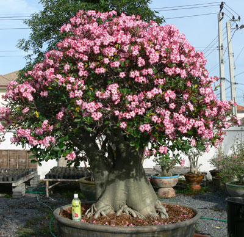
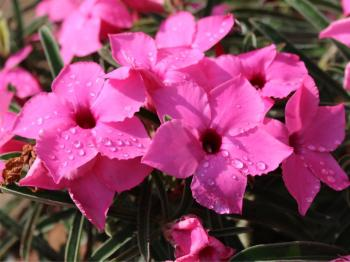
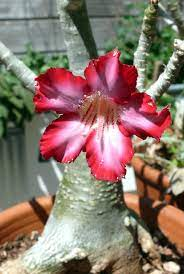
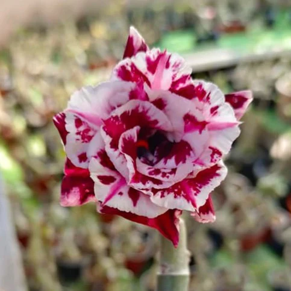

Also known as the Impala Lily, this short variety has thick branches and a large underground root. It can reach a maximum height of three meters.
This variety has a wide trunk, or caudex, that stores water. It has a squat and fat growth form, with little differentiation between the trunk and branches.
This common variety has small to large leaves in many colors. Plants can range from compact to tall.
This versatile variety can be grown into a bonsai or a large upright "tree like" adenium.
This variety has huge, high-centered flowers that are similar to rose blooms.